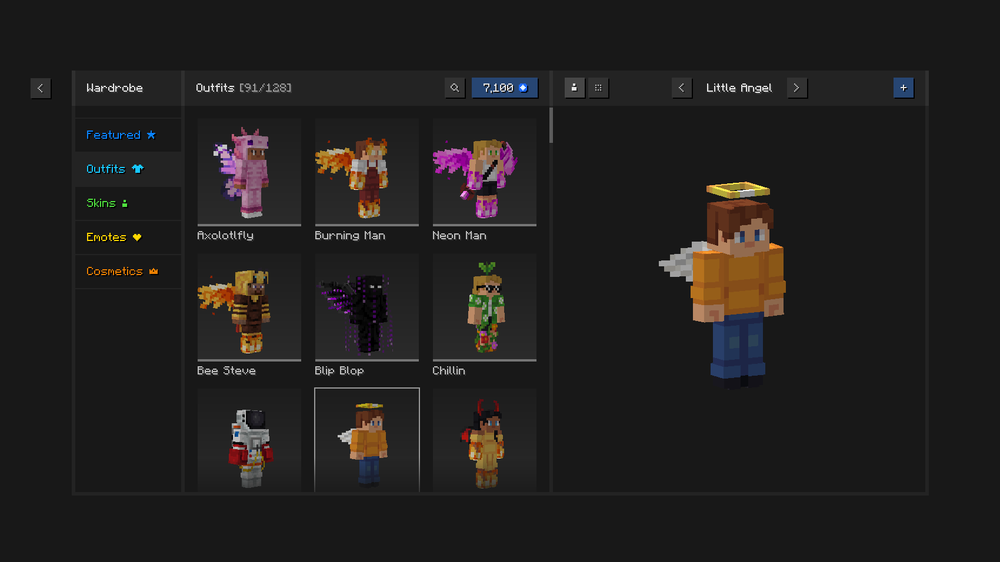
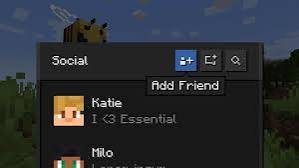

Essential Mod is one of the most popular Minecraft mods available today. It adds modern multiplayer features directly into Minecraft and makes playing with friends easier than ever. Millions of players use Essential because it improves communication, multiplayer access and overall gameplay convenience.
What Is Essential Mod?
Essential Mod is a quality-of-life Minecraft mod focused on social and multiplayer features. Instead of setting up complicated servers, players can invite friends directly and enjoy a smoother experience.

Features
- ✔ Friend System
- ✔ One Click Multiplayer Invites
- ✔ Cosmetic Customization
- ✔ Screenshot Manager
- ✔ Modern UI
- ✔ Lightweight Performance
- ✔ Frequent Updates
- ✔ Multiplayer Support
Why Players Love Essential
Essential makes Minecraft feel more modern. Players can quickly join friends, share screenshots and enjoy social features that normally require multiple external tools.
Whether you play survival, creative or modded Minecraft, Essential Mod can improve your overall experience.

Installation Guide
1. Download Essential Mod using the button below.
2. Install the mod file.
3. Launch Minecraft.
4. Login to your Essential account.
5. Enjoy multiplayer features.
📥 Download Essential Mod
Improve your Minecraft experience with powerful social and multiplayer tools.
Download ModCredits: Essential Mod belongs to its original developers. Hero Verse only provides information and download access links.